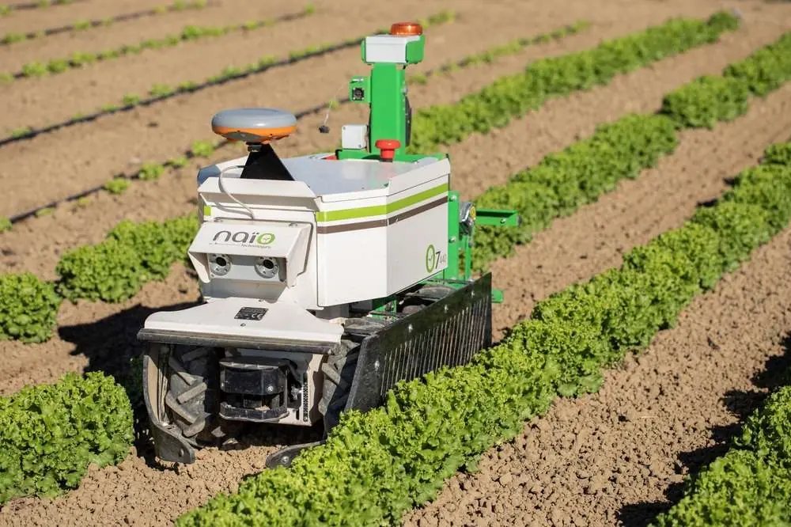
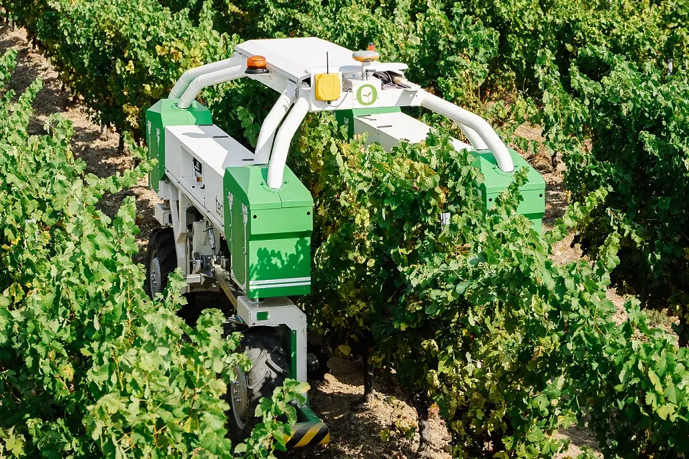
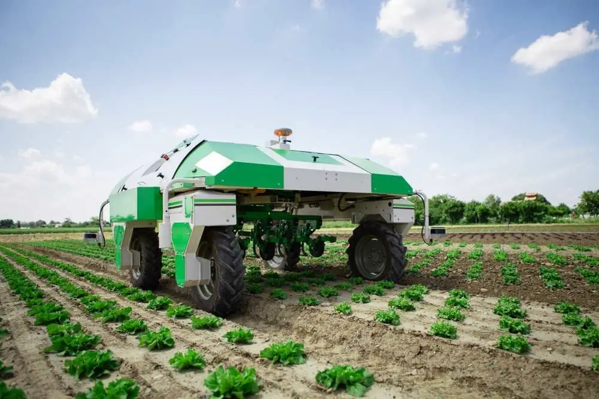
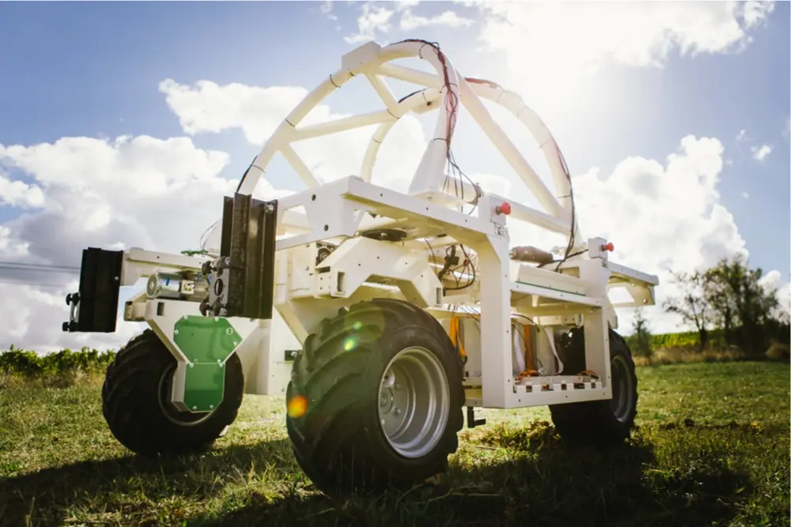

NAÏO TECHNOLOGIES
Cette entreprise est une start-up née en 2011.
Vous trouverez sur cette page diverse informations la concernant
Continuer
Présentation de la start-up
Entreprise Escalquinoise née de 2 ingénieurs
L’organisation est une Société de personnes (associés) fondée par deux ingénieurs français,
Aymeric Barthès et Gaëtan Séverac. L’idée originale dérière l’entreprise était de simplifier
des tâches répétitives et pénible en créant des robots capables de reproduire des tâches fatiguantes.
De cette idée est créée la stat-up en 2011 et innove encore aujourd’hui avec comme objectifs
de réduire les dégâts fait à l’environnement et réduire les travaux répétitifs des cultivateurs
Aujourd'hui ils comptabilisent 4 différents types de robots.
Leur slogan « Autonomous robots
for easier farming », signifiant en français « Robots autonomes pour de l’agriculture plus simple »
représente bien leurs objectfis.
Le siège sociale de l’organisation est situé à Escalquens en
Haute-Garonne.
L’entreprise vielle de 10 ans est une petite moyenne entreprise ( 51 - 200 employés ).
Étude des modèles économiques
Naïo Technologies génère ses revenus en vendant des tracteurs intelligents, autonomes et électriques. Ils les designent intégralement et les commercialisent.
Ils ont développé 4 robots : Oz, Ted, Dino et Bob.
Produit proposés
-
L’entreprise Naio Technologies propose à la fois 2 innovations technologiques.
• Oz est un assistant agricole pour les tâches chronophages et pénible, il peut désherber,
tracés des sillons, semer ou planter, assister et transporter. Il est de petite taille et le
premier robot à avoir été développé, Il est commercialisé en 2014 avec l’aide de la
plateformes de financement participatifs Wiseed.
• Ted est un robot de désherbage pour les cultures viticoles sans utiliser d’herbicide.
Il a une autonomie de 8 heures et une interface intuitive et un porte outil universel
permettant d’y connecter n’importe quel outil.
• Dino est un automate de désherbage sophistiqué utilisant la technologie GPS pour ce
localiser dans les passerelles, il est aussi équipé de caméras pour repéré les rangées
de plantes et adapter la position des ses outils. Sont poids bien inférieur à celui d’un
tracteur traditionnel lui permet d’aller travailler plus raidement après un épisode de pluie.
Il a une autonomie de 10h et se déplace au maximum à 4km/h.
• Bob n’est pas présent sur leur site donc j’en déduis qu’il n’est plus commercialisé. -    
Principales dépenses
-
Comme toutes les autres entreprises, Naïo Technologies a certaines dépenses obligatories,
à savoir, les dépenses fixes que sont les impôts et les taxes, les loyer et l'entretien des
locaux, et enfin les frais bancaires. Ensuite, il y a dépenses variables, qui sont les salaires
des salariés, l’achat de matières premières et la fabrication des robots agricoles.
L'entreprise participe aussi à des conventions. Principales recettes
- Leurs principales sources de recettes et la vente de robots et l'investissements des actionnaires.
Type de modèle adopté
-
Le modèle adopté est l'innovation permanente, c’est-à-dire, qu'ils conçoivent leurs robots,
d'abord en prototypes, les améliores, et finalements les mettent en ventes aux particuliés.
Ils développement de nouveux robots entre-temps ou de nouvelles versions de ceux déjà existants.
Étude de la chaîne de valeur
|
Infrastrastructure Naïo Technologies à son siège social à l'adresse : 235 rue de la Montagne Noire, 31750 Escalquens Haute-Garonne. Ils ont de nombreux distributeurs dispercés principalement en France mais aussi à l'internationale. Ils disposent aussi de deux distributeurs. |
Marge Naïo Tech. disposent de fonds propres à hauteur de 2.2 millions € en 2017. Elle à levé 10 millions € en janvier 2020 pour accélérer son développement. |
||||
|
Gestion des ressources humaines Naïo Technologies a des employés dans les RH |
|||||
|
Gestion des recherches et développement L'organisation améliorent constament leurs robots via des mise à jours logiciels sur ceux-cis via Internet. |
|||||
|
Achats Naïo Tech. s'est associé à Varta, entreprise américaine dans l'énergie. |
|||||
|
Approvisionnement Batterie et station de recharge Varta |
Fabrication - Robots autonomes |
Commercialisation Robots en commerce, plus de 160 de leurs robots sont en fonction dans le monde. |
Ventes Le prix sur le marché est aux alentours des 20 000€ |
Services Le logiciel faisant fonctionner les robots est unifié et constamment mis à jour |
|
Outils de diagnostic externes et internes
Analyse SWOT
|
S Strenghs Forces |
W Weaknesses Faiblesses |
O Opportunities Opportunités |
T Threats Menaces |
|
- Des associations pour innover avec d'autres entreprises dans la GreenTech 2 fondateurs ingénieurs apportant leurs savoirs |
Prix des robots élevé |
- Innovations Technologiques |
Pas seul start-up dans ce domaine, AgreenCulture est sur le même marché |
Analyse PESTEL :
| Politique |
- Des associations pour innover avec d'autres entreprises dans la GreenTech |
| Economique |
- Les prix d'un robot est 20 000€ : une majorité des Agriculteur n’auront pas les fonds nécessaire pour l’achat d’un robot |
| Sociologique | Des associations pour innover avec d'autres entreprises dans la GreenTech |
| Technologique |
Innovation technologique dans le domaine de la robotique agricole : |
| Ecologique |
- Réduction des émission de gaz à effet de serre |
| Légal |
Normalisation des robots agricoles |